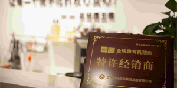
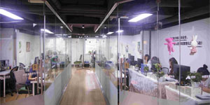
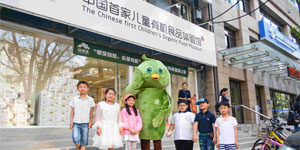
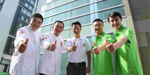

沈阳良农集饮食企业策划有限公司
沈阳良农集饮食企业策划有限公司（简称“良农集”）始建于2010年，是沈阳最早从事有机食品行业的企业之一，致力于打造“从田间到舌尖”的全产业链有机食品生产体系。良农集一期计划，预投资3.6亿（2015年-2020年）在葫芦岛、法库、黑龙江五常投资建立生态产业基地。二期计划，预投资6.5亿（2020年-2025年）打造东北黑土地优质农品交易中心。
2010年，良农集与国内600余家有机食品基地建立了良好的合作关系，主要经营国家指定有机食品生产基地生产的有机大米，面粉，猪肉，蔬菜，食用油，鸡蛋，杂粮，山珍，蜂蜜，饮料等，为广大消费者提供安全、营养的优质有机食品。同时销售高品质儿童有机食品，孕产妇有机食品，营养康复有机食品等。作为沈阳最早从事有机食品行业的企业之一，良农集品牌作为放心食品获得了消费者的信赖和认可，成为沈阳有机食品行业知名品牌。良农集的含义就是要做良心农夫的代言人，做消费者健康的守护神。该企业的投资将为本项目的实施提供最可靠的绿色有机食品来源。
2015年，作为食物营养健康产业的从业者，良农集联合多家有机食品生产基地和企业，共同发起了“学生有机餐项目”。该项目将通过为处于生长发育关键时期的青少年提供安全、健康、营养、美味、低价的有机饮食，为“健康中国”奠定基础，为《国民营养计划》的顺利实施做出贡献！
2016年，良农集联手实力资本运作巨企再创佳绩，打造了良农集儿童有机食品体验馆+白领有机餐。现已发展成为集有机食材售卖、有机食品加工、有机配餐生产为一体的餐饮机构。引领中国健康饮食潮流。
良农集中国首家学生（白领）有机餐的出现，使得沈阳成为中国首个学生及白领能吃上有机餐的城市。
